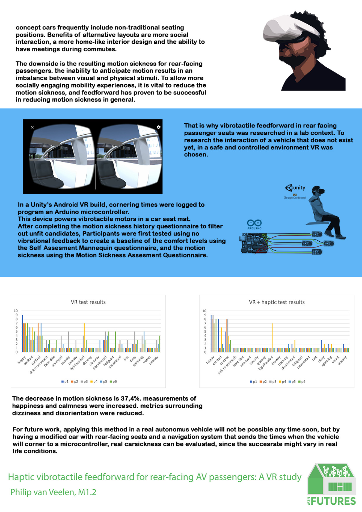
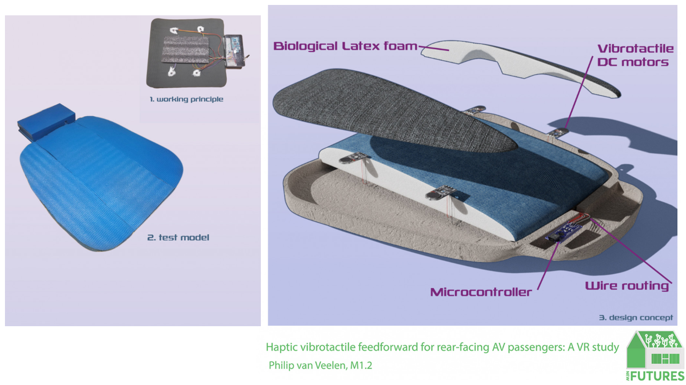
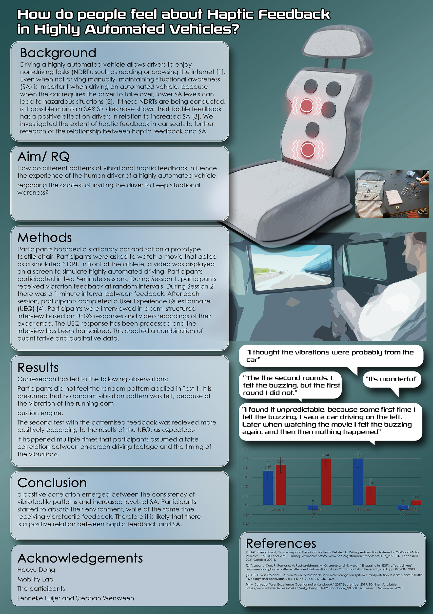
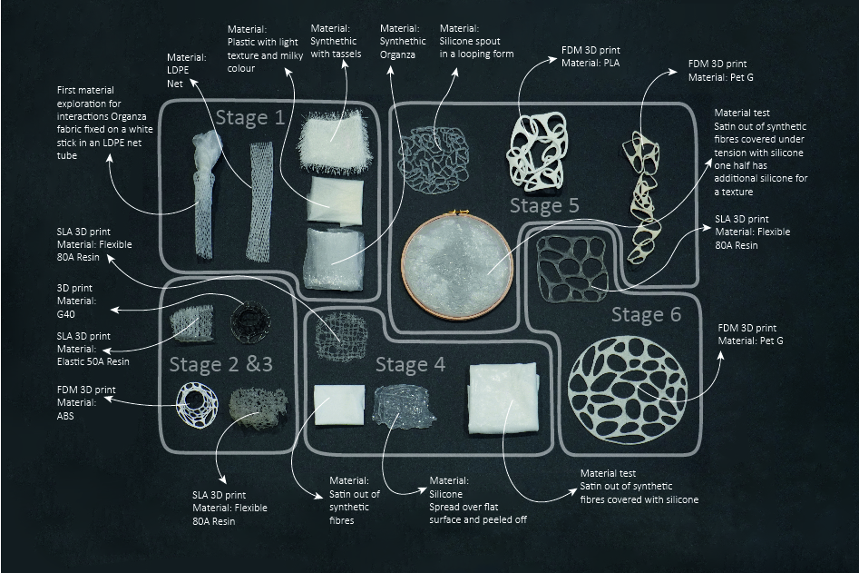
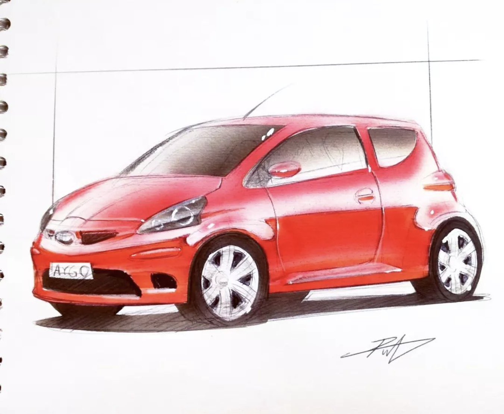
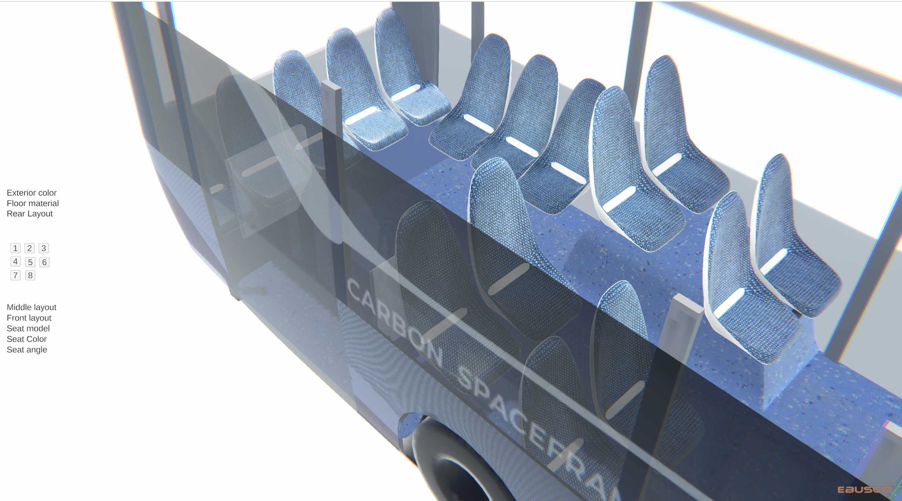
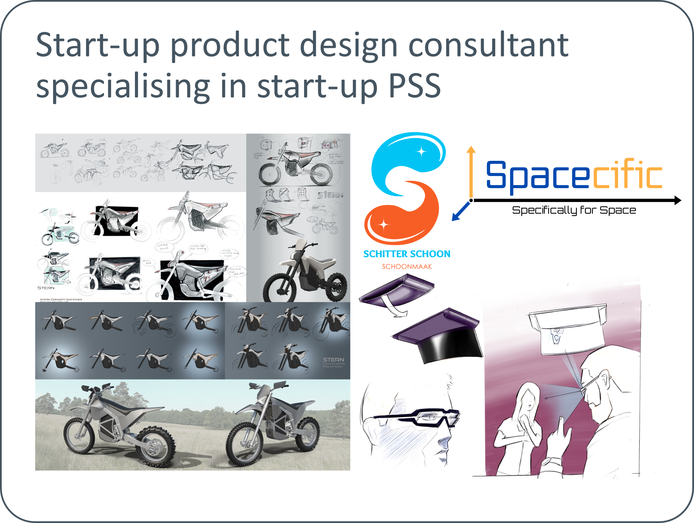

My professional identity is rooted in my passion for the process of designing. I experiment with implementing new software, techniques and tricks to steer projects in new directions. I have a deep love for design sketching, which enables me to ideate, communicate and pitch. I am a creator, explorer and accommodator. My favourite design activities are problem exploration, ideation and discussion.
During my master's study, I gained knowledge about user experience and programming, but I also evolved my design process. Because I have always dreamt of designing and building a car, I joined the TU/ecomotive team as chief design. We created a sustainable electric vehicle within a year in this student team. I could express my passion for design sketching and CAD. Still, I also improved my ability to work in multi-disciplinary, multi-cultured teams, integrating hardware, rapid prototyping, and design leadership. Besides my learning activities, I Explored my passion for exploratory sketching broadly. As a designer, I worked on many side projects, including company logos and products. I assisted in design sketch courses, aided the succeeding TU/ecomotive team via workshops and feedback, and followed online courses to discover my preferred method and style.
Whereas my study trajectory guided me to become a designer in an automotive manufacturer, I learned that educating and designing with startups and smaller businesses are my favourite moments, which is why after graduation, I will apply for part-time educational jobs and create my design studio. I believe that the combination of gaining experience as a designer and the inspiration from education will enable me to make a valuable contribution to society and suits my skillset best.
.png)
Manufacturers should explore modularity since it can offer product flexibility, repairability, and customization. Product manufacturers should be regulated to reduce their environmental footprint, E-waste generation, and waste generation. It is not within the power of the consumer to change a systemic problem, and manufacturers should be forced into compliance with the standardization of materials, connectors, and perhaps even material choice. As a designer, I believe this will happen due to the environmental effects of mass overconsumption and ecological neglect. Designers should prepare for this regulation by learning about sustainable materials, modularity, and the circular economy.
As an aspiring design sketching teacher, I will strive to create a positive environment that emphasises the importance of patience, cultivating a growth mindset, and embracing failure as a part of growth. I will continue to motivate and support students to develop their design skills, encouraging them to experiment and take risks. I believe education is never over, and as an aspiring teacher, I strive to challenge students to find their strengths. I will do my best to inspire a growth mindset. I want students to know that they can achieve their goals with patience, knowledge and efficient practice.
.png)
The Centre of Expertise for Challenge-Based Learning became a formative experience for me. In a group of four rookie entrepreneurs, we were challenged to push the boundaries of our projects and mindsets. When we started the course, we tried fixing engineering and design problems. By the end, we shifted from bicycles to hydroponics and landed on an augmented reality application for language learning, because we used value maps, empathy maps and business model canvasses. This approach and creative process changed our perception of innovation. Instead of trying to create a product with innovative technology, the value network lead to more grounded decision making.
Throughout the program, I significantly my presentation skills and acquired the ability to assess whether a product possessed a viable market fit. Additionally, I delved into the exploration of value networks and discovered how designers can play a more active role in the overall market success of a product. The process was a valuable learning experience, as it taught us to adapt and iterate based on feedback, validation and market demands.
 >
>
After learning about the state-of-the-art of UX, we took part in a design challenge by PHILIPS to improve the user experience for hospital
patients
waiting for treatment. We focused on reducing discomfort and anxiety by creating a calming and
interactive waiting room environment. My responsibilities included conducting expert interviews,
ideation, and prototyping.
The challenge was to reduce anger in patients in the waiting room. In the United States, people
can walk
into the hospital waiting room. When one's situation is more severe, they can be treated faster,
while
others have to wait longer. This difference in waiting time can lead to patient frustration,
ranging
from annoyance to more serious consequences.
Our concept was that the patients required segmentation based on the severity of their medical
condition. The waiting room was segmented into four so that the less urgent color codes could
not see
the desk while the urgent patients could. This layout was paired with an application that indicates waiting times, but is also transparent when an emergency patient has to be treated priorly. The application is visualised as an aquarium.
In the course 'Data Enabled Design,' I worked with four people to create MINEBIRD - a bird-shaped device that communicates air quality in an engaging and informative way. My role in the project involved ideation, CAD modeling, and rapid prototyping of various components. We utilized sensors to gather air quality data which was sent to Datafoundry, which was then communicated to the user through the bird's movement and LED lights. The shape of a canarie was chosen as an emulation of the use of birds through mining tunnels throughout history. If the air quality drops below a treshhold, the bird's head starts lowering. The bird's electronics consisted of an ESP32 which was outfitted with an air-quality sensor, step motor and several LEDs. The project allowed us to explore the intersection of data and design and create an innovative solution that informs the user about awareness about their air quality.
During the pandemic, I wanted to have a course in my comfort zone and improve my hard skills.
During the
course, I became driven to become a teacher assistant since this would allow learning about
education
and sketching and help finance my study.
During a guest lecture by Luciano Bove, I also established a connection and became his student.
After an overview of aesthetic theory, students were challenged to create moodboards on several topics. In a group of four students we were assigned the topic of agoraphobia; the fear of wide-open spaces. I learned about art history, mood boards, expression, and visual communication. In later assignments, students were free to choose their own topics. I saw this as an oppertunity to mix my interests in Blender 3D and adobe Photoshop to visualise a design manifesto for 'design on mars'. I implemented different fonts, aesthetics and self-made assets to communicate our vision on a future multi-cultural and technologically advanced mars colony.
 >
>
 >
>
Master project 2.1: vibrational feedforward for rear-facing passengers During my Master project 2.1, I worked on implementing vibrational feedforward for rear-facing passengers in automated vehicles. I developed a VR application in which the participants would be driven through the TU/e campus. This prototype was paired with a seat outfitted with four vibrotactile actuators, connected to an Arduino board. By synchronising the vibrations with the moments where the simulated vehicle would turn, corners could be anticipated. This reduced the VR motion sickness. During this project I learned about Unity 3D, programming, user studies and research methods.
> >During this course, we conducted constructive design research on haptic feedback in automated vehicle car seats. We aimed to explore how haptic feedback can enhance the user experience in automated vehicle car seats. We developed a test prototype, consisting of a seat cover with muplitple vibriting actuators. We used this research prototype in a stationary vehicle to research how different vibrational patterns would affect users. I found that a lab approach would be far more suitable for future automated vehicle testing. Since I was interested in continuing to work in this field, I decided to use virtual reality in my M2.1 project, leaning more toward quantitative data.
>In the course Interactive Materiality, we explored the relationship between materials and interaction design, and how they can be combined to create novel and engaging user experiences. As a group of students, we worked on the THOM project, which aimed to design new materiality through the combination of interaction gestalt, materials, and actuators. We investigated the role of haptic and tactile feedback in creating meaningful interactions and explored different materials and actuation methods to achieve our design goals. Our project focused on the design of an interactive surface that would respond to user inputs with a variety of visual and haptic feedback, and we used our knowledge of material properties and interaction design to create a unique and compelling user experience. Our final design consisted of a silicone - infused synthetic textile, with a rotating 3d-printed TPU structure, which was ment to express the caustics and movement of bodies of water. Although the research on interactive materiality was an interesting topic, this course also contributed to my concern for sustainabillity, since the mixing of materials and the implementation of electronics made me consider the environmental effects of such design theories.
>When I met Luciano Luciano Bove, I wanted to join his one-on-one lectures on automotive design sketching. Not only was it enjoyable and informative, but I also implemented his insights into my student team design. It made me more confident in my abilities, and I learned to work faster. Also, shading organic shapes opened new possibilities for expressing and exploring shapes.
>Chief automotive designer responsible for the exterior and interior design of a sustainable electric car developed by the TU/Ecomotive student team, achieving CO2 neutrality. Developed the packaging, exterior, and interior design leading a team of 3 design students from concept to production in one year. As chief design I was responsible for managing the design team, creating concept sketches, 3D concept models and end responsible for the quality of the interior and exterior of the car. The design of the car is just the the physical manifestation of the challenges, successes, setbacks and growth we went through. What I am even more proud of is the positive, rewarding and creative team we have formed together.

In a group of four students, we were challenged to use Artificial Inteligence combined with image processing to create a business proposal. Our group conceptualised an AI-powered web navigation tool to assist students in finding relevant information online. Using the methods from 'the lean startup' by Eric van Ries, we underwent an iterative process to create a business proposal. We had to validate assumptions, decide when to persist, persevere or perish. For me, this course was almost like a continuation of the Innovation Space project, but paired with more elaborate and comprehensive methods. The skills and lessons from Innovation Space became more a more structured procces with more clarity and scientific bases. It bridged the acedemic methods with the pragmatic validation.
Design sketching is one of my biggest passions, and I had the amazing opportunity to assist Martijn van der Wiel's classes for a year. Assisting his classes allowed me to improve my own design sketching abilities, while also learning how to teach others. Helping to teach others how to sketch has allowed me to gain a deeper understanding of the sketching process and how to effectively communicate ideas through sketches. I realised that the process of learning requires a more analytical approach, and that the mentality of students is one of the most contributing factors to skill-development.
 >
>
In the course 'Data Enabled Design', I worked in a group of four people to create MINEBIRD - a bird-shaped device that communicates air quality in an engaging and informative way. My role in the project involved ideation, CAD modeling, and rapid prototyping of various components. We utilized sensors to gather air quality data, which was then communicated to the user through the bird's movement and LED lights. The project allowed us to explore the intersection of data and design, and create a solution that raises awareness about air quality in an innovative way.
Within Ebusco I wanted to perform user-centred design, for which I interview people on the street and in questionnaires. I ideated using design sketching based the user responses, but also expirimented using Gravity sketch, a VR drawing tool. This lead to a light-emitting ceiling and angled chairs to increase the presence of windows in the field of view. I used ANSYS simulation to create an optimised bus pole connection, to decrease the blockage of the ceiling lights.
I also decided to use Unity 3D to improve the audit process of Ebusco since I noticed that the current process was highly labour intensive. I completed unity certificates and created a web UI, along with design proposals to improve the atmosphere on the bus. I developed my compitencies in implementing rea-time graphics, working outside of the design brief on where I found that the company could be more efficient. I implemented my knowledge from innovation space, M1.2, Design innovation strategies, principles of aesthetics and user experience leading to multiple design proposals.
In this course, I worked in a group of 4 students to address the issue of sound disruptions at the library. We conducted user research and identified pain points, then worked to design a solution that would reduce noise levels while maintaining a comfortable and welcoming environment. We performed ethnographic research, applied the systemic design methodology and created a concept of a social music streaming service for students.
 >
>
I approached the EDAG group to explore sustainability within the commercial vehicle market. By combining the expert knowledge and experience from EDAG Helmond, my experience from the research design development track, my practical skills, my passion for automotive design, and my TU/Ecomotive experience, I wish to end my academic career by combining my interests, knowledge, and enthusiasm into a final master project.
In this project, I researched the context of commercial vehicles in urban zones regarding the electrification and circularity potential to maximise sustainability in a financially viable method. The car is designed to perform in a product service system and to optimise its lifespan in an economically viable way. This shift to PSS emphasises resource optimisation, reduced environmental impact, and improved economic performance. This is done by considering the product hierarchy and customisation service.
I am grateful for the opportunity to collaborate with Wouter and Richard, whose expertise and insights were inspiring. Throughout the project, I found the circular economy concept exciting. Learning about it and reading about its principles was a valuable experience, and implementation was challenging. The project has taught me essential lessons about prioritisation, adaptability, and the power of collaboration. I look forward to applying the knowledge I gained to future endeavours and remain enthusiastic about the circular economy.
I will create my own design studio as a part-time business, because I want to work on shorter and more diverse projects, and I believe that my hardskills, user centred process and innovation method can help me grow in this field. Starting my own business will allow me to choose projects that align with my interests and abilities. It will allow me to work on various design projects, including digital design, graphic design, and product design. I will be able to slowly build up my repetaire and tasks. This will enable me to improve my skills and expertise by constantly engaging with different clients and industries. Working on shorter, more diverse projects will expose me to new challenges, technologies, and design trends, contributing to my professional growth and development.
I will become a teacher for design sketching classes because I have an exceptional drive for the subject, and I want to share my knowledge and skills with others. Teaching design sketching will allow me to reach future designers and provide them with the necessary tools. I found learning from Martijn van der Wiel inspiring and enjoyed being a teacher's assistant. This position will also help me because teaching requires a deep understanding of the subject, pushing me to improve my design techniques and knowledge.
